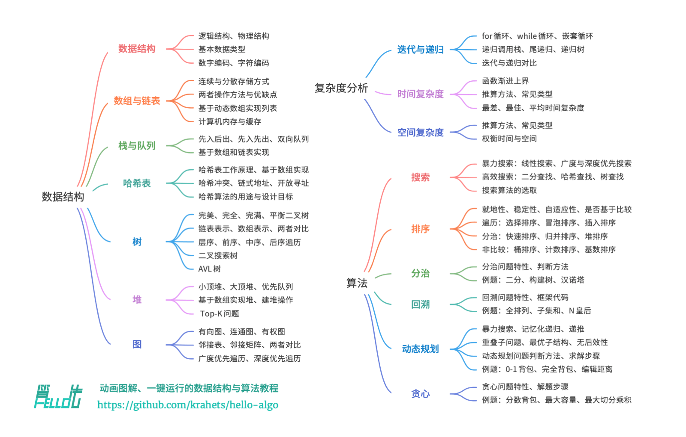

数据结构与算法
以 Hello 算法 为蓝本，增加许多线上题型，快速系统地复习数据结构和算法的知识，通过基础技术面试！

01 初识算法
1.1 算法无处不在
当我们听到“算法”这个词时，很自然地会想到数学。然而实际上，许多算法并不涉及复杂数学，而是更多地依赖基本逻辑，这些逻辑在我们的日常生活中处处可见。
1.2 算法是什么
数据结构 (Data Structure) 是组织和存储数据的方式，涵盖数据内容、数据之间关系和数据操作方法，它具有以下设计目标：
-
1. 空间占用尽量少，以节省计算机内存。
-
2. 数据操作尽可能快速，涵盖数据访问、添加、删除、更新等。
-
3. 提供简洁的数据表示和逻辑信息，以便算法高效运行。
算法 (Algorithm) 是在有限时间内解决特定问题的一组指令或操作步骤，它具有以下特性：
-
1. 问题是明确的，包括清晰的输入和输出定义。
-
2. 具有可行性，能够在有限步骤、时间和内存空间下完成。
-
3. 各步骤都有明确的含义，在相同的输入和运行条件下，输出始终相同。
02 复杂度分析
2.1 算法效率评估
在算法设计中，我们先后追求以下两个层面的目标：
-
1. 找到问题解法：算法需要在规定的输入范围内可靠地求得问题的正确解。
-
2. 寻求最优解法：同一个问题可能存在多种解法，我们希望找到尽可能高效的算法。
也就是说，在能够解决问题的前提下，算法效率已成为衡量算法优劣的主要评价指标，它包括以下两个维度：
-
1. 时间效率：算法运行时间的长短。
-
2. 空间效率：算法占用内存空间的大小。
简而言之，我们的目标是设计“既快又省”的数据结构和算法。
2.2 迭代与递归
迭代 (Iteration) 是一种重复执行某个任务的控制结构。在迭代中，程序会在满足一定的条件下重复执行某段代码，直到这个条件不再满足。
以下函数基于 for 循环实现了求和 \(1 + 2 + ... + n\) ：
def sum(n):
result = 0
# 循环求和 1, 2, ... , n-1, n
for i in range(1, n+1):
result += i
return result
assert sum(100) == 5050递归 (Recursion) 是一种算法策略，通过函数调用自身来解决问题。它主要包含两个阶段：
-
1. 递：程序不断深入地调用自身，通常传入更小或更简化的参数，直到达到“终止条件”。
-
2. 归：触发“终止条件”后，程序从最深层的递归函数开始逐层返回，汇聚每一层的结果。
使用 recur 函数完成 \(1 + 2 + ... + n\) 的计算：
def recur(n):
if n == 1:
return 1
return n + recur(n-1)
assert recur(100) == 5050使用递归求解斐波那契数列，规则如下：
-
数列的前两个数字为
f(1) = 0和f(2) = 1。 -
数列中的每个数字是前两个数字之和，即
f(n) = f(n - 1) + f(n - 2)。
def fib(n):
if n == 1 or n == 2:
return n - 1
return fib(n-1) + fib(n-2)
assert fib(5) == 3虽然从计算角度看，迭代与递归可以得到相同的结果，但它们代表了两种完全不同的思考和解决问题的范式。
-
迭代：“自下而上”地解决问题。从最基础的步骤开始，然后不断重复或累加这些步骤，直到任务完成。
-
递归：“自上而下”地解决问题。将原问题分解为更小的子问题，这些子问题和原问题具有相同的形式。接下来将子问题继续分解为更小的子问题，直到基本情况时停止（基本情况的解是已知的）。
2.3 时间复杂度
时间复杂度分析统计的不是算法运行时间，而是算法运行时间随着数据量变大时的增长趋势。
设输入数据大小为 \(n\) ，常见的时间复杂度类型如下所示：
常数阶的操作数量与输入数据大小 \(n\) 无关，即不随着 \(n\) 的变化而变化。
arr = [10, 20, 30, 40]
assert arr[2] == 30 # O(1)线性阶的操作数量相对于输入数据大小 \(n\) 以线性级别增长。线性阶通常出现在单循环中：
def linear(n):
count = 0
for _ in range(n):
count += 1
return count
assert linear(10) == 10平方阶通常出现在嵌套循环中，外层循环和内层循环的时间复杂度都为 \(O(n)\) ，因此总体的时间复杂度为 \(O(n^2)\) ：
def find_duplicates(arr):
n = len(arr)
duplicates = set()
for i in range(n):
for j in range(i + 1, n):
if arr[i] == arr[j]:
duplicates.add(arr[i])
return list(duplicates)
assert find_duplicates([1, 2, 3, 2, 4, 1, 5]) == [1, 2]指数阶的时间复杂度为 \(O(2^n)\) ，如下是生成列表的所有子集：
def generate_subsets(arr, index=0, subset=[]):
if index == len(arr):
print(subset)
return
# 不选当前元素
generate_subsets(arr, index + 1, subset)
# 选当前元素
generate_subsets(arr, index + 1, subset + [arr[index]])
generate_subsets([1, 2, 3])[] [3] [2] [2, 3] [1] [1, 3] [1, 2] [1, 2, 3]
对数阶 \(O(log(n))\) 通常意味着每次操作都会减少问题的规模，如下是求最大公约数：
def gcd(a, b):
# 使用欧几里得算法求最大公约数
while b:
a, b = b, a % b
return a
assert (gcd(48, 18)) == 62.4 空间复杂度
空间复杂度 (Space Complexity) 用于衡量算法占用内存空间随着数据量变大时的增长趋势。
03 数据结构
3.1 数据结构分类
常见的数据结构包括数组、链表、栈、队列、哈希表、树、堆、图，它们可以从“逻辑结构”和“物理结构”两个维度进行分类。
逻辑结构可分为“线性”和“非线性”两大类。线性结构比较直观，指数据在逻辑关系上呈线性排列；非线性结构则相反，呈非线性排列。
物理结构反映了数据在计算机内存中的存储方式，可分为连续空间存储（数组）和分散空间存储（链表）。
3.2 基本数据类型
基本数据类型是 CPU 可以直接进行运算的类型，在算法中直接被使用，主要包括以下几种：
1. 整数类型 byte、short、int、long 。
2. 浮点数类型 float、double ，用于表示小数。
3. 字符类型 char ，用于表示各种语言的字母、标点符号甚至表情符号等。
4. 布尔类型 bool ，用于表示“是”与“否”判断。
04 数组与链表
4.1 数组
数组 (Array) 是一种线性数据结构，其将相同类型的元素存储在连续的内存空间中。我们将元素在数组中的位置称为该元素的 索引 (Index) 。
常见的数组操作有访问、插入、删除等。
arr = [0] * 5
assert arr == [0, 0, 0, 0, 0]
nums: list[int] = [1, 3, 2, 5, 4]
assert nums == [1, 3, 2, 5, 4]
def insert(nums, num, index):
# 插入
for i in range(len(nums) - 1, index, -1):
nums[i] = nums[i - 1]
nums[index] = num
insert(nums, 6, 2)
assert nums == [1, 3, 6, 2, 5]LeetCode 1. 两数之和
class Solution(object):
def twoSum(self, nums, target):
"""
:type nums: List[int]
:type target: int
:rtype: List[int]
"""
for i in range(0, len(nums)):
for j in range(i + 1, len(nums)):
if nums[i] + nums[j] == target:
return [i, j] LeetCode 53. 最大子数组和
基础解法，但是判断会超时，因为用了三个 for 循环，时间复杂度太高。
class Solution(object):
def maxSubArray(self, nums):
"""
:type nums: List[int]
:rtype: int
"""
if nums is None:
return None
length = len(nums)
max_num = nums[0]
for i in range(0, length):
for j in range(i, length):
temp_num = 0
for k in range(i, j + 1):
temp_num += nums[k]
if temp_num > max_num:
max_num = temp_num
return max_num使用动态规划的解题思路，从最小数组开始求解，逐步增加数组的长度：
class Solution(object):
def maxSubArray(self, nums):
dp = [0] * len(nums)
dp[0] = nums[0]
max = dp[0]
for i in range(1, len(nums)):
dp[i] = nums[i] + (dp[i - 1] if dp[i - 1] > 0 else 0)
max = dp[i] if dp[i] > max else max
return max4.2 链表
链表 (Linked List) 是一种线性数据结构，其中的每个元素都是一个节点对象，各个节点通过“引用”相连接。引用记录了下一个节点的内存地址，通过它可以从当前节点访问到下一个节点。
构建一个链表节点：
class SinglyListNode:
def __init__(self, val: int):
self.val: int = val
self.next: SinglyListNode | None = None插入操作：
def insert(node: SinglyListNode, inserted: SinglyListNode):
# 在链表的节点 node 之后插入节点 inserted
temp = node.next
node.next = inserted
inserted.next = temp删除操作：
def remove(node: SinglyListNode):
# 删除链表的节点 node 之后的首个节点
if not node.next:
return
node.next = node.next.nextLeetCode 206. 反转链表
# Definition for singly-linked list.
class ListNode(object):
def __init__(self, val=0, next=None):
self.val = val
self.next = next
class Solution(object):
def reverseList(self, head):
"""
:type head: Optional[ListNode]
:rtype: Optional[ListNode]
"""
result = None
current = head
while current != None:
temp = current.next
current.next = result
result = current
current = temp
return resultLeetCode 707. 设计链表
重点解题思路：是有一个 size 记录链表的大小。
class LinkedNode:
def __init__(self, val=0, next=None):
self.val = val
self.next = next
class MyLinkedList(object):
def __init__(self):
self.head = None
self.size = 0
def get(self, index):
"""
:type index: int
:rtype: int
"""
if index < 0 or index >= self.size:
return -1
node = self.head
for _ in range(0, index):
node = node.next
return node.val
def addAtHead(self, val):
"""
:type val: int
:rtype: None
"""
self.addAtIndex(0, val)
def addAtTail(self, val):
"""
:type val: int
:rtype: None
"""
self.addAtIndex(self.size, val)
def addAtIndex(self, index, val):
"""
:type index: int
:type val: int
:rtype: None
"""
if index > self.size:
return
node = LinkedNode(val)
cur = self.head
if index <= 0:
node.next = self.head
self.head = node
else:
for _ in range(index - 1):
cur = cur.next
node.next = cur.next
cur.next = node
self.size += 1
def deleteAtIndex(self, index):
"""
:type index: int
:rtype: None
"""
if index < 0 or index >= self.size:
return
cur = self.head
if index == 0:
self.head = self.head.next
else:
for _ in range(index - 1):
cur = cur.next
cur.next = cur.next.next
self.size -= 1
# Your MyLinkedList object will be instantiated and called as such:
# obj = MyLinkedList()
# param_1 = obj.get(index)
# obj.addAtHead(val)
# obj.addAtTail(val)
# obj.addAtIndex(index,val)
# obj.deleteAtIndex(index)4.3 列表
列表 (List) 是一个抽象的数据结构概念，它表示元素的有序集合，支持元素访问、修改、添加、删除和遍历等操作，无须使用者考虑容量限制的问题。列表可以基于链表或数组实现。
为了加深对列表工作原理的理解，我们尝试实现一个简易版列表：
class MyList:
def __init__(self):
# 受保护属性
self._capacity = 10
self._arr = [0] * self._capacity
self._size = 0
self._extend_ratio = 2
def size(self):
return self._size
def capacity(self):
return self._capacity
def get(self, index):
if index < 0 or index >= self._size:
raise IndexError('Index error')
return self._arr[index]
def set(self, num: int, index: int):
if index < 0 or index >= self._size:
raise IndexError('Index error')
self._arr[index] = num
def add(self, num: int):
# 元素数量超出容量时，触发扩容机制
if self.size() == self.capacity():
self.extend_capacity()
self._arr[self._size] = num
self._size += 1
def insert(self, num: int, index: int):
if index < 0 or index >= self._size:
raise IndexError('Index error')
if self._size == self.capacity():
self.extend_capacity()
# 将索引 index 以及以后的元素都向后移动一位
for j in range(self._size - 1, index - 1, -1):
self._arr[j+1] = self._arr[j]
self._arr[index] = num
self._size += 1
def remove(self, index):
if index < 0 or index >= self._size:
raise IndexError('Index Error')
num = self._arr[index]
# 将索引 index 之后的元素都向前移动一位
for j in range(index, self._size - 1):
self._arr[j] = self._arr[j+1]
# 更新元素数量
self._size -= 1
# 返回被删除的元素
return num
def extend_capacity(self):
self._arr = self._arr + [0] * \
self.capacity() * (self._extend_ratio - 1)
def to_array(self):
return self._arr[: self._size]05 栈与队列
5.1 栈
栈 (Stack) 是一种遵循先入后出逻辑的线性数据结构。
为了深入了解栈的运行机制，我们来尝试自己实现一个栈类，可以基于数组或者链表进行实现。
基于链表的实现：
class ListNode:
def __init__(self, val):
self.val = val
self.next: ListNode | None = None
class LinkedListStack:
def __init__(self):
self._peek: ListNode | None = None
self._size = 0
def size(self):
return self._size
def is_empty(self):
return self._size == 0
def push(self, val):
node = ListNode(val)
node.next = self._peek
self._peek = node
self._size += 1
def peek(self):
if self.is_empty():
raise IndexError('Index Error')
if self._peek:
return self._peek.val
else:
raise IndexError('Index Error')
def pop(self):
num = self.peek()
if self._peek:
self._peek = self._peek.next
else:
raise IndexError('Index Error')
self._size -= 1
return num
def to_list(self):
arr = []
node = self._peek
while node:
arr.append(node.val)
arr.reverse()
return arr基于数组的实现：
class ArrayStack:
'''
基于数组实现的栈
'''
def __init__(self):
self._stack: list[int] = []
def size(self):
return len(self._stack)
def empty(self):
return self.size() == 0
def push(self, item):
self._stack.append(item)
def pop(self):
if self.empty():
raise IndexError('Index error')
return self._stack.pop()
def peek(self):
if self.empty():
raise IndexError('Stack is empty')
return self._stack[-1]
def to_list(self):
return self._stackLeetCode 155. 最小栈
解题思路：用一个栈记录最小值，可能 push 或者 pop 两次。
import sys
class MinStack(object):
def __init__(self):
self.arr = []
self.min = sys.maxsize
def push(self, val):
"""
:type val: int
:rtype: None
"""
if val <= self.min:
self.arr.append(self.min)
self.min = val
self.arr.append(val)
def pop(self):
"""
:rtype: None
"""
if self.top() == self.min:
self.arr.pop()
self.min = self.top()
self.arr.pop()
def top(self):
"""
:rtype: int
"""
return self.arr[-1]
def getMin(self):
"""
:rtype: int
"""
return self.min
# Your MinStack object will be instantiated and called as such:
# obj = MinStack()
# obj.push(val)
# obj.pop()
# param_3 = obj.top()
# param_4 = obj.getMin()5.2 队列
队列是一种遵循先入先出规则的线性数据结构。顾名思义，队列模拟了排队现象，即新来的人不断加入队列尾部，而位于队列头部的人逐个离开。
LeetCode 232. 用栈实现队列
解题思路：一个栈放置输入，一个栈放置输出，等到输出为空时，将输入全部放置到输出。
class MyQueue(object):
def __init__(self):
self.input = ArrayStack()
self.output = ArrayStack()
def push(self, x):
"""
:type x: int
:rtype: None
"""
self.input.push(x)
def pop(self):
"""
:rtype: int
"""
temp = self.peek()
self.output.pop()
return temp
def peek(self):
"""
:rtype: int
"""
if self.output.empty():
while not self.input.empty():
self.output.push(self.input.peek())
self.input.pop()
return self.output.peek()
def empty(self):
"""
:rtype: bool
"""
return self.input.empty() and self.output.empty()
# Your MyQueue object will be instantiated and called as such:
# obj = MyQueue()
# obj.push(x)
# param_2 = obj.pop()
# param_3 = obj.peek()
# param_4 = obj.empty()5.3 双向队列
06 哈希表
6.1 哈希表
哈希表 (Hash Tabel) 又称散列表，它通过建立键 key 与值 value
之间的映射，实现高效的元素查询。具体而言，我们向哈希表中输入一个键 key ，则可以在 \(O(1)\) 时间内获取对应的值 value 。
哈希表的常见操作包括：初始化、查询操作、添加键值对和删除键值对等。
# 初始化哈希表
hmap = {}
# 在哈希表中添加键值对 (key, value)
hmap[123] = '鸭'
hmap[234] = '鸡'
hmap[345] = '猪'
hmap[456] = '牛'
print(hmap[345])
hmap.pop(345)
print(hmap)07 树
7.1 二叉树
二叉树 (Binary Tree) 是一种非线性数据结构，代表“祖先”与“后代”之间的派生关系，体现了“一分为二”的分治逻辑。与链表类似，二叉树的基本单元是节点，每个节点包含值、左子节点引用和右子节点引用。
class TreeNode:
def __init__(self, value=0, left=None, right=None) -> None:
self.value = value
self.left = left
self.right = right7.2 二叉树的遍历
层序遍历 (Level-Order Traversal) 从顶部到底部逐层遍历二叉树，并在每一层按照从左到右的顺序访问节点。
层序遍历本质上属于 广度优先遍历 (Breadth-first Traversal) ，它体现了一种“一圈一圈向外扩展”的逐层遍历方式。
7.3 二叉树数组表示
给定一棵完美二叉树，我们将所有节点按照层序遍历的顺序存储在一个数组中，则每个节点都对应唯一的数组索引。
根据层序遍历的特性，我们可以推导出父节点索引与子节点索引之间的“映射公式”：若某节点的索引为 \(i\)，则该节点的左子节点索引为 \(2i + 1\) ，右子节点索引为 \(2i + 2\) 。
表示任意二叉树，我们可以考虑在层序遍历序列中显示地写出所有 None 。
# 使用 None 来表示空位
tree = [1, 2, 3, 4, None, 6, 7, 8, 9, None, None, 12, None, None, 15]以下代码实现了一棵基于数组表示的二叉树，包括以下几种操作：
给定某节点，获取它的值、左（右）子节点、父节点。
获取前序遍历、中序遍历、后序遍历、层序遍历序列。
08 堆
堆 (Heap) 堆（heap）是一种满足特定条件的完全二叉树，主要可分为两种类型。
09 图
9.1 图
图 (Graph) 是一种非线性结构，由 顶点 (Vertex) 和 边 (Edge) 组成。我们可以将图 G 抽象地表示一组顶点 V 和一组边 E 的集合。以下示例展示了一个包含 5 个顶点和 7 条边的图：
V = {1, 2, 3, 4, 5}
E = {(1, 2), (1, 3), (1, 5), (2, 3), (2, 4), (2, 5), (4, 5)}
G = {V, E}图数据结构包含以下常用术语：
- 邻接 (Adjacency) ：当两顶点之间存在边相连时，称这两顶点“邻接”。
- 路径 (Path) ：从顶点 A 到顶点 B 经过的边构成的序列被称为从 A 到 B 的“路径”。
- 度 (Degree) ：一个顶点拥有的边数。
图的常用表示方式包括“邻接矩阵”和“邻接表”。
设图的顶点数量为 n ，邻接矩阵 (Adjacency Matrix) 使用一个 n x n 大小的矩阵来表示图，每一行（列）代表一个顶点，矩阵元素代表边，用 1 或 0 表示两个顶点之间是否存在边。
邻接表 (Adjacency List) 使用 n 个链表来表示图，链表节点表示顶点。第 i 个链表对应顶点 i ，其中存储了该顶点的所有邻接顶点。
9.2 图基础操作
矩阵实现图的基本操作：
class GraphAdjMatrix:
"""
基于邻接矩阵实现的无向图类
"""
def __init__(self, vertices: list[int], edges: list[list[int]]):
self.vertices = []
self.adj_mat = []
# 添加顶点
for val in vertices:
self.add_vertex(val)
# 添加边
for e in edges:
self.add_edge(e[0], e[1])
def size(self):
return len(self.vertices)
def add_vertex(self, val):
n = self.size()
# 向顶点列表中添加新顶点的值
self.vertices.append(val)
# 在邻接矩阵中添加一行
new_row = [0] * n
self.adj_mat.append(new_row)
# 在邻接矩阵中添加一列
for row in self.adj_mat:
row.append(0)
def remove_vertex(self, index):
if index >= self.size():
raise IndexError()
# 在顶点列表中移除索引 index 的顶点
self.vertices.pop(index)
# 在邻接矩阵中删除索引 index 的行
self.adj_mat.pop(index)
# 在邻接矩阵中删除索引 index 的列
for row in self.adj_mat:
row.pop(index)
def add_edge(self, i, j):
if i < 0 or j < 0 or i >= self.size() or j >= self.size() or i == j:
raise IndexError()
# 在无向图中，邻接矩阵关于主对角线对称，即满足 (i, j) == (j, i)
self.adj_mat[i][j] = 1
self.adj_mat[j][i] = 1
def remove_edge(self, i, j):
if i < 0 or j < 0 or i >= self.size() or j >= self.size() or i == j:
raise IndexError()
self.adj_mat[i][j] = 0
self.adj_mat[j][i] = 0
def print(self):
print("顶点列表 =", self.vertices)
vertices = [1, 3, 2, 5, 4]
edges = [[0, 1], [0, 3], [1, 2], [2, 3], [2, 4], [3, 4]]
graph = GraphAdjMatrix(vertices, edges)
# 顶点 1，2 的索引分别为 0，2
graph.add_edge(0, 2)
graph.remove_edge(0, 1)
graph.add_vertex(6)
graph.remove_vertex(1)
链表实现图的基本操作：
class Vertex:
def __init__(self, val):
self.val = val
def vals_to_sets(vals):
return [Vertex(val) for val in vals]
class GraphAdjList:
def __init__(self, edges: list[list[Vertex]]):
# 邻接表，key: 顶点，value: 该顶点的所有邻接顶点
self.adj_list = dict[Vertex, list[Vertex]]()
# 添加所有顶点和边
for edge in edges:
self.add_vertex(edge[0])
self.add_vertex(edge[1])
self.add_edge(edge[0], edge[1])
def size(self):
return len(self.adj_list)
def add_edge(self, vet1, vet2):
if vet1 not in self.adj_list or vet2 not in self.adj_list or vet1 == vet2:
raise ValueError()
# 添加边 vet1 - vet2
self.adj_list[vet1].append(vet2)
self.adj_list[vet2].append(vet1)
def remove_edge(self, vet1, vet2):
if vet1 not in self.adj_list or vet2 not in self.adj_list or vet1 == vet2:
raise ValueError()
# 删除边 vet1 - vet2
self.adj_list[vet1].remove(vet2)
self.adj_list[vet2].remove(vet1)
def add_vertex(self, vet):
if vet in self.adj_list:
return
self.adj_list[vet] = []
def remove_vertex(self, vet):
if vet not in self.adj_list:
raise ValueError()
# 在邻接表中删除顶点 vet 对应的链表
self.adj_list.pop(vet)
# 遍历其它顶点的链表，删除所有包含 vet 的边
for vertex in self.adj_list:
if vet in self.adj_list[vertex]:
self.adj_list[vertex].remove(vet)
def print(self):
for vertex in self.adj_list:
tmp = [v.val for v in self.adj_list[vertex]]
print(f"{vertex.val}: {tmp}")
v = vals_to_sets([1, 3, 2, 5, 4])
edges = [
[v[0], v[1]],
[v[0], v[3]],
[v[1], v[2]],
[v[2], v[3]],
[v[2], v[4]],
[v[3], v[4]],
]
graph = GraphAdjList(edges)
# 添加边
graph.add_edge(v[0], v[2])
# 删除边
graph.remove_edge(v[0], v[1])
# 添加顶点
v5 = Vertex(6)
graph.add_vertex(v5)
# 删除顶点
graph.remove_vertex(v[1])9.3 图的遍历
图的遍历方式可分为两种：广度优先遍历和深度优先遍历。
BFS 通常借助队列来实现，代码如下所示。队列具有“先入先出”的性质，这与 BFS 的“由近及远”的思想异曲同工。
1. 将遍历起始顶点加入队列，并开启循环。
2. 在循环的每轮迭代中，弹出队首顶点并记录访问，然后将该顶点的所有邻接顶点加入到队列结尾。
3. 循环 2 步骤，直到所有顶点被访问完毕后结束。
为了防止重复遍历顶点，我们需要借助一个哈希集合 visited 来记录哪些节点已被访问。
def graph_bfs(graph: GraphAdjList, start_vet: Vertex):
"""
广度优先遍历
使用邻接表来表示图，以便获取指定顶点的所有邻接顶点
"""
result = []
visited = set[Vertex]([start_vet])
queue = collections.deque([start_vet])
# 以 start_vet 为起点，循环直至访问完所有顶点
while len(queue) > 0:
vet = queue.popleft()
result.append(vet)
# 遍历该顶点的所有邻接顶点
for adj_vet in graph.adj_list[vet]:
if adj_vet in visited:
continue
queue.append(adj_vet)
visited.add(adj_vet)
return result
v = vals_to_sets([1, 3, 2, 5, 4])
edges = [
[v[0], v[1]],
[v[0], v[3]],
[v[1], v[2]],
[v[2], v[3]],
[v[2], v[4]],
[v[3], v[4]],
]
graph = GraphAdjList(edges)
result = graph_bfs(graph, v[0])
for vet in result:
print(vet.val)深度优先遍历是一种优先走到底、无路可走再回头的遍历方式。
def dfs(graph, visited, result, vet):
result.append(vet)
visited.add(vet)
for adjVet in graph.adj_list[vet]:
if adjVet in visited:
continue
# 递归访问邻接顶点
dfs(graph, visited, result, adjVet)
def graph_dfs(graph: GraphAdjList, start_vet: Vertex):
"""
深度优先遍历
使用邻接表来表示图，以便获取指定顶点的所有邻接顶点
"""
result = []
visited = set[Vertex]()
dfs(graph, visited, result, start_vet)
return result
v = vals_to_sets([1, 3, 2, 5, 4])
edges = [
[v[0], v[1]],
[v[0], v[3]],
[v[1], v[2]],
[v[2], v[3]],
[v[2], v[4]],
[v[3], v[4]],
]
graph = GraphAdjList(edges)
result = graph_dfs(graph, v[0])
for vet in result:
print(vet.val)10 搜索
10.1 二分查找
二分查找（binary search）是一种基于分治策略的高效搜索算法。它利用数据的有序性，每轮缩小一半搜索范围，直至找到目标元素或搜索区间为空为止。
给定一个长度为 n 的数组 nums ，元素按从小到大的顺序排列且不重复。请查找并返回元素 target 在该数组中的索引。若数组不包含该元素，则返回 -1 。
def binary_search(nums, target):
i, j = 0, len(nums) - 1
while i <= j:
m = (i + j) // 2
if nums[m] < target:
i = m + 1
elif nums[m] > target:
j = m - 1
else:
return m
return -1
target = 6
nums = [1, 3, 6, 8, 12, 15, 23, 26, 31, 35]
assert binary_search(nums, target)11 排序
11.1 选择排序
选择排序 (Selection Sort) 的工作原理非常简单：开启一个循环，每轮从未排序区间选择最小的元素，将其放到已排序区间的末尾。
设数组的长度为 \(n\) ，选择排序的算法如下：
-
1. 初始状态下，所有元素未排序，即未排序（索引）区间为 \([0, n - 1]\) 。
-
2. 选取区间 \([0, n - 1]\) 中的最小元素，将其与索引 0 处的元素交换。完成后，数组前 1 个元素已排序。
-
3. 选取区间 \([1, n - 1]\) 中的最小元素，将其与索引 1 处的元素交换。完成后，数组前 2 个元素已排序。
-
4. 以此类推。经过 \(n - 1\) 轮选择与交换后，数组前 \(n - 1\) 个元素已排序。
-
5. 仅剩的一个元素必定是最大元素，无须排序，因此数组排序完成。
def selection_sort(nums: list[int]):
n = len(nums)
# 外循环：未排序区间为 [i, n-1]
for i in range(n - 1):
# 内循环：找到未排序区间内的最小元素
k = i
for j in range(i + 1, n):
if nums[j] < nums[k]:
k = j
# 将该最小元素与未排序区间的首个元素交换
nums[i], nums[k] = nums[k], nums[i]
return nums
print(selection_sort([6, 4, 7, 5, 1, 8, 3, 9, 2]))4.2 冒泡排序
冒泡排序 (Bubble Sort) 通过连续地比较与交换相邻元素实现排序。这个过程就像气泡从底部升到顶部一样，因此得名冒泡排序。
设数组的长度为 \(n\) ，冒泡排序的算法如下：
-
1. 首先，对 你个元素执行“冒泡”，将数组的最大元素交换至正确位置。
-
2. 接下来，对剩余 \(n - 1\) 个元素执行“冒泡”，将第二大元素交换至正确位置。
-
3. 以此类推，经过 \(n - 1\) 轮“冒泡”后，前 \(n - 1\) 大的元素都被交换至正确位置。
-
4. 仅剩的一个元素必定是最小元素，无须排序，因此数组排序完成。
def bubble_sort(nums: list[int]):
n = len(nums)
# 外循环：未排序未 [0, i]
for i in range(n - 1, 0, -1):
# 内循环：将未排序区间 [0, i] 中的最大元素交换至该区间的最右端
for j in range(i):
if nums[j] > nums[j + 1]:
# 交换
nums[j], nums[j + 1] = nums[j + 1], nums[j]
return nums
print(bubble_sort([6, 4, 7, 5, 1, 8, 3, 9, 2]))11.3 插入排序
插入排序 (Insertion Sort) 是一种简单的排序算法，它的工作原理与手动整理一副牌的过程非常相似。
11.4 快速排序
快速排序 (Quick Sort) 是一种基于分治策略的排序算法，运行高效，应用广泛。
快速排序的核心操作是哨兵划分，其目标是：选择数组中的某个元素作为基准数，将所有小于基准值的元素移动到其左侧，而大于基准值的元素移动到右侧。
哨兵划分完成后，原数组被划分成三部分：左子数组、基准数、右子数组，且满足 “左子数组任意元素 <= 基准数 <=右子数组任意元素” 。因此，我们接下来只需对这两个子数组进行排序。
def partition(nums: list[int], left, right) -> int:
# 以 nums[left] 为基准数
i, j = left, right
while i < j:
while i < j and nums[j] >= nums[left]:
# 从右向左找首个小于基准数的元素
j -= 1
while i < j and nums[i] <= nums[left]:
# 从左向右找首个大于基准数的元素
i += 1
# 元素交换
nums[i], nums[j] = nums[j], nums[i]
# 将基准数交换到两子数组的分界线
nums[i], nums[left] = nums[left], nums[i]
# 返回基准数的索引
return i
def quick_sort(nums: list[int], left, right):
if left >= right:
return
# 哨兵划分
pivot = partition(nums, left, right)
quick_sort(nums, left, pivot - 1)
quick_sort(nums, pivot + 1, right)
nums = [6, 4, 7, 5, 1, 8, 3, 9, 2]
quick_sort(nums, 0, len(nums) - 1)
print(nums)12 分治
12.1 分治算法
13 回溯
13.1 回溯算法
回溯算法 (Backtracking Algorithm) 是一种通过穷举来解决问题的方法，它的核心思想是从一个初始状态出发，暴力搜索所有可能的解决方案，当遇到正确的解则将其记录，直到找到解或者尝试了所有可能的选择都无法找到解为止。
回溯算法通常采用“深度优先搜索”来遍历解空间，接下来我们利用前序遍历构造一个回溯问题，逐步了解回溯算法的工作原理。
给定一个二叉树，搜索并记录所有值为 7 的节点，请返回节点列表。
class TreeNode:
def __init__(self, val=0):
self.val = val
self.left: TreeNode | None = None
self.right: TreeNode | None = None
def list_to_tree_dfs(arr: list[int], i: int) -> TreeNode | None:
# 使用递归将列表反序列化为二叉树
# 如果索引超出数组长度，或者对应的元素为 None ，则返回 None
if i < 0 or i >= len(arr) or arr[i] is None:
return None
root = TreeNode(arr[i])
# 递归构建左右子树
root.left = list_to_tree_dfs(arr, 2 * i + 1)
root.right = list_to_tree_dfs(arr, 2 * i + 2)
return root
result = list[TreeNode]()
def pre_order(root: TreeNode):
if root is None:
return
if root.val == 7:
result.append(root)
pre_order(root.left)
pre_order(root.right)
root = list_to_tree_dfs([1, 7, 3, 4, 5, 6, 7], 0)
pre_order(root)
print([node.val for node in result])之所以称为回溯算法，是因为该算法在搜索解空间时会采用尝试与回退的策略。当算法在搜索过程中遇到某个状态无法继续前进或无法得到满足条件的解时，它会撤销上一步的选择，退回到之前的状态，并尝试其它可能的选择。
在上述代码中，访问每个节点都代表一次尝试，而越过叶节点或返回父节点的 return 则表示回退。
14 动态规划
小溪汇入河流，江河汇入大海。
动态规划将小问题的解汇集成大问题的答案，一步步引领我们走向解决问题的彼岸。
14.1 初探动态规划
动态规划 (Dynamic Programming) 是一个重要的算法范式，它将一个问题分解为一系列更小的子问题，并通过存储子问题的解来避免重复计算，从而大幅提升时间效率。
在本节中，我们从一个经典例题入手，先给出它的暴力回溯解法，观察其中包含的重叠子问题，再逐步导出更高效的动态规划解法。
给定一个共有 n 阶的楼梯，我们每步可以上 1 阶或者 2 阶，请问有多少种方案可以爬到楼顶？
本题的目标是求解方案的数量，我们可以考虑通过回溯来穷举所有的可能性。具体来说，将爬楼梯想象为一个多轮选择的过程：从地面出发，每轮选择上 1 阶或 2 阶，每当到达楼梯顶部时就将方案数量加 1 ，当越过楼梯顶部时就将其剪枝。
def backtrack(choices: list[int], state, total, result):
# 回溯
# 当爬到第 n 阶时，方案数量加 1
if state == total:
result[0] += 1
# 遍历所有选择
for choice in choices:
# 剪枝：不允许越过第 top 阶
if state + choice > total:
continue
# 尝试：做出选择，更新状态
backtrack(choices, state + choice, total, result)
# 回退
def climbing_stairs_backtrack(total):
# 可选择向上爬 1 阶或者 2 阶
choices = [1, 2]
# 从第 0 阶开始爬
state = 0
# 记录方案数量
result = [0]
backtrack(choices, state, total, result)
return result[0]
assert climbing_stairs_backtrack(20) == 10946重要推论：爬到第 \(i - 1\) 阶的方案加上爬到第 \(i - 2\) 阶的方案数就等于爬到第 i 阶的方案数。公式如下：
这意味着在爬楼梯问题中，各个子问题之间存在递推关系，原问题的解可以由子问题的解构建得来。
我们可以以 \(dp[n]\) 为起点，递归地将一个较大问题拆解为两个较小问题的和，直至到达最小子问题 \(dp[1]\) 和 \(dp[2]\) 时返回。其中，最小子问题的解是已知的，即 \(dp[1] = 1\) 和 \(dp[2] = 2\) ，表示爬到第 1 和 2 阶分别有 1 和 2 两种方案。
def climb_stairs_dfs(n):
if n == 1 or n == 2:
return n
count = climb_stairs_dfs(n - 1) + climb_stairs_dfs(n - 2)
return count
assert climb_stairs_dfs(20) == 10946暴力搜索形成的递归树，对于问题 \(dp[n]\) ，其递归树的深度为 n ，时间复杂度为 \(O(2^n)\) 。
指数阶的时间复杂度是重叠子问题导致的，例如 \(dp[9]\) 被分解为 \(dp[8]\) 和 \(dp[7]\) ，\(dp[8]\) 被分解为 \(dp[7]\) 和 \(dp[6]\) ，两者都包含子问题 \(dp[7]\) 。
为了提升算法效率，我们希望所有的重叠子问题都只被计算一次。为此，我们声明一个数组 mem 来记录每个子问题的解。
def climb_stairs_dfs_mem(n, mem):
if n == 1 or n == 2:
return n
if mem[n] != -1:
return mem[n]
count = climb_stairs_dfs_mem(n - 1, mem) + climb_stairs_dfs_mem(n - 2, mem)
mem[n] = count
return count
n = 20
# mem[i] 记录爬到第 i 阶的方案总数，-1 代表无记录
mem = [-1] * (n + 1)
assert climb_stairs_dfs_mem(n, mem) == 10946记忆化搜索是一种“从顶至底”的方法：我们从原问题（根节点）开始，递归地将较大子问题分解为较小子问题，直至解已知的最小子问题（叶节点）。之后，通过回溯逐层收集子问题的解，构建出原问题的解。
与之相反，动态规划是一种“从底至顶”的方法：从最小子问题的解开始，迭代地构建更大子问题的解，直至得到原问题的解。
由于动态规划不包含回溯过程，因此只需使用循环迭代实现，无须使用递归。
def climb_stairs_dp(n):
if n == 1 or n == 2:
return n
# 初始化 dp 表，用于存储子问题的解
dp = [0] * (n + 1)
# 初始状态：预设最小子问题的解
dp[1], dp[2] = 1, 2
# 状态转移：从较小子问题逐步求解较大子问题
for i in range(3, n + 1):
dp[i] = dp[i - 1] + dp[i - 2]
return dp[n]
assert climb_stairs_dp(20) == 10946我们可以总结动态规划的常用术语：
1. 将数组
dp称为 dp 表，\(dp[i]\) 表示状态 i 对应子问题的解。2. 将最小子问题对应的状态（第 1 阶和第 2 阶楼梯）称为初始状态。
3. 将递推公式 \(dp[i] = dp[i - 1] + dp[i - 2]\) 称为状态转移方程。
由于 \(dp[i]\) 只与 \(dp[i - 1]\) 和 \(dp[i - 2]\) 有关，因此我们无须使用一个数组来存储所有子问题的解，而只需要两个变量滚动前进即可。
def climb_stairs_dp_comp(n):
if n == 1 or n == 2:
return n
a, b = 1, 2
for _ in range(3, n + 1):
a, b = b, a + b
return b
assert climb_stairs_dp_comp(20) == 1094614.2 DP 问题特性
14.3 DP 解题思路
14.4 0-1 背包问题
背包问题是一个非常好的动态规划入门题目，是动态规划中最常见的问题形式。其具有很多变种，例如 0-1 背包问题、完全背包问题、多重背包问题等。在本节中，我们先来求解最常见的 0-1 背包问题。
给定 n 个物品，第 i 个物品的重量为 wgt[i - 1] ，价值为 val[i - 1] ，和一个容量为 cap 的背包。每个物品只能选择一次，问在限定背包容量下能放入物品的最大价值。
我们可以将 0-1 背包问题看作一个由 n 轮决策组成的过程，对于每个物体都有不放入和放入两种决策，因此该问题满足决策树模型。
15 贪心
贪心算法 (Greedy Algorithm) 是一种常见的解决优化问题的算法，其基本思想是在问题的每个决策阶段，都选择当前看起来最优的选择。
15.1 贪心算法
贪心算法 (Greedy Algorithm) 是一种常见的解决优化问题的算法，其基本思想是在问题的每个决策阶段，都选择当前看起来最优的选择，即贪心地做出局部做优的决策，以期获得全局最优解。贪心算法简洁且高效，在许多实际问题中有着广泛的应用。
我们先通过例题“零钱兑换”了解贪心算法的工作原理。
给定 n 种硬币，第 i 种硬币的面值为 coins[i - 1] ，目标金额为 amt
，每种硬币可以重复选取，问能够凑出目标金额的最少硬币数量。如果无法凑出目标金额，则返回 -1 。
def coin_change_greedy(coins: list[int], amt) -> int:
i = len(coins) - 1
count = 0
# 循环进行贪心选择，直到无剩余金额
while amt > 0:
while i > 0 and coins[i] > amt:
i -= 1
amt -= coins[i]
count += 1
# 若未找到可行方案，则返回 -1
return count if amt == 0 else -1
coins = [1, 5, 10, 20, 50, 100]
print(coin_change_greedy(coins, 137))